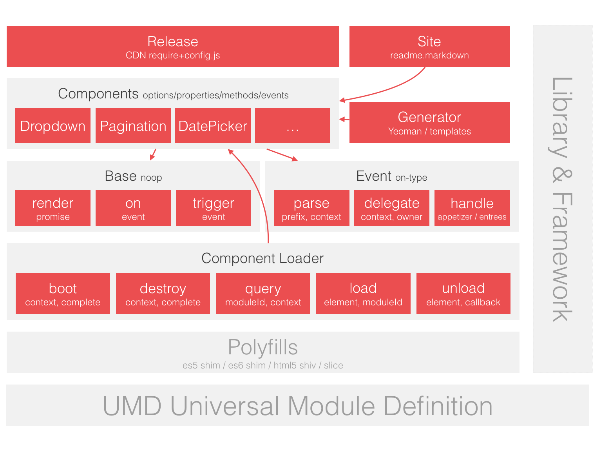

Brix
像使用原生元素一样使用组件。
快速开始
第一步 引入 Brix
<script src="//g.alicdn.com/thx/brix-release/1.0.0-beta.8/require-config-css.js"></script>第二步 配置 bx-name
<select bx-name="components/dropdown">
<option>foo</option>
<option>bar</option>
<option>faz</option>
</select>第三步 执行 Loader.boot()
var Loader = require('brix/loader')
Loader.boot()
// 或者
require(['brix/loader'], function(Loader){
Loader.boot()
})运行结果： JSFiddle
引入 Brix 说明
//g.alicdn.com/thx/brix-release/1.0.0-beta.7/require-config-css.js
| 文件名 | 说明 |
|---|---|
| require-config.js | RequireJS + Brix 模块化配置。 |
| require-config-debug.js | RequireJS + Brix 模块化配置，调试模式。 |
| require-config-css.js | RequireJS + Brix 模块化配置 + 自动加载相关 CSS。 |
| require-config-css-debug.js | RequireJS + Brix 模块化配置 + 自动加载相关 CSS，调试模式。 |
| require-config-css-animation.js | RequireJS + Brix 模块化配置 + 自动加载相关 CSS + 自动加载动画 CSS。 |
| require-config-css-animation-debug.js | RequireJS + Brix 模块化配置 + 自动加载相关 CSS + 自动加载动画 CSS，调试模式。 |
Brix 模块化配置 包含了以下模块的路径配置：
- Loader
- Base
- Event
- Animation
- Components
- 第三方库：jquery, underscore, moment, handlebars, mock, marked, highlightjs, nprogress, parsley, accounting, progressbar, Sortable, vue
自动加载相关 CSS 包含了以下 CSS 文件：
- bootstrap.css
- 所有组件样式的集合 components.css
- 表单验证组件的样式 parsley.css
- MineCraft 规范样式 minecraft.css
手动引入 CSS 说明
Brix 的样式基于 Bootstrap，但是，如果你的项目中已经引入了与 Bootstrap 重复或冲突的其他基础样式库，那么你应该只引入文件 require-config.js，然后手动引入组件的样式：
// 引入所有组件样式
require(['css!brix/styles/components.css'])或者按需引入某些组件的样式：
// 按需引入某些组件的样式
require(['css!brix/styles/dropdown.css'])
require(['css!brix/styles/pagination.css'])模块化的 Brix
Brix 主要由 Loader、Base、Event、Components 组成。
| 模块 | 模块 ID | 说明 |
|---|---|---|
| Loader | brix/loader |
组件加载器，负责管理 Components 的整个生命周期，包括加载、初始化、渲染和销毁。 |
| Base | brix/base |
组件基类。 |
| Event | brix/event |
支持 bx-type 风格的事件模型，实现事件与 DOM 结构的松耦合，提升可读性、可复用性和可测试性。 |
| Components | brix/components/ 或 components/ |
一些可复用的组件。 |
Brix 架构图
如果你想深入了解 Brix 的运行原理，那么下面张图会给你一个全面的印象。
